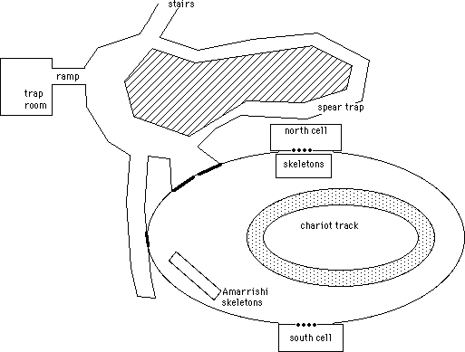
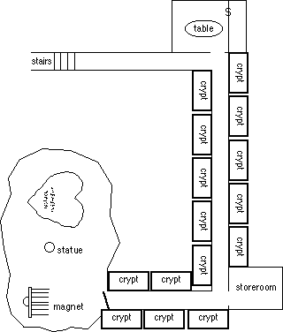

Blackhawk's Log, stardate 2352.4
Bad karma. That is the only possible explanation for why I'm
still stuck on this damn planet. Bad karma.
Sigmund managed a respectable forgery of a cargo transport
order, sufficient to get the meat delivered to my client. He claims he
made it with a magic spell. I think they're just a bunch of natural
born thieves and forgers around here. Unfortunately no document could
get me out of here right now, no passenger ships are allowed to land
anywhere on the planet. There's no way to stow away in a cargo ship,
security is tight and the hold is depressurized. The carcass of a
demon can leave this world, but I can't.
We went back to Edwin, whom the locals call a Loremaster.
The Narrator
Edwin's shop was somewhat more difficult to find this time,
but eventually the party uncovered the unassuming door labeled
"curious goods". Edwin seemed surprised to see them, but
when asked he did have a mission for them. There is an island near
Jaimen named Aranmor. In the center of Aranmor is the ruined city of
Terek'Knev. Once the seat of power of an empire, Terek'Knev was
destroyed by the forces of light over 500 years ago.
There is a powerful stone in Terek'Knev which is said to be
connected to the Lords of Orhan in some fashion. Mighty powers are attributed
to the Stone of Skaroth in myth and legend, but no-one knows how much of
the legend is true. Edwin told the adventurers that there is an evil moving
in Kulthea. The newly violent Storms of Essaence are but a symptom of it.
They must find the stone before someone else does. The Stone might have
the power to stop the Storms of Essaence.
Sigmund's Journal
We went back to me family lands, t' drop off some of our heavy
equipment in th' root cellar. Me brother and 'is kin were not there when
we arrived, but returned an hour later from th' caves where they'd taken
shelter from th' Essaence Storm. We left th' Plasma Repeater Rifle in th'
cellar, along with a few extra weapons. I left a fair bit of me gold with
me brother to see him through, and we headed for the north coast of Emer.
We reached the port city of Samblin and hid the vehicle in
a damned bramble of trees a mile outside the gates. We be needin' a
ship to get to Jaimen, and hired the Boloquay for the three week
journey.
Log of the good ship Boloquay, Captain Carl recording
We set out under fair skies, with favorable trade winds which
might shave a day from our crossing. Two days out we spotted a bunch of
dolphins off port, which kept our passengers entertained for hours. Landlubbers.
They were even pleased to see the mermen which showed up the next day.
Stupid landlubbers, any sailor can tell you that the mermen are lazy, good
for nothing parasites.
Frisbee's report to her monastery
I established communication with the sea elves, whom the sailors
call mer-folk, by throwing them bits of fruit and bread. I tried tossing
a silver piece to them, which they played with and tossed about in a game
for quite some time. Sensing that the sparkle of the silver captured their
imagination rather than its monetary value, I tossed a small cut gemstone
out to them. One of them reached up to catch it easily. They did not throw
the gemstone about, instead they gathered around and passed it carefully
one to the next. Then in unison they dived under the water.
An hour later a large sea creature slowly surfaced under the
Boloquay. The crew was greatly alarmed by this, but fortunately did not
try to harm the creature. It gathered speed and dragged the ship along,
keeping to our original course. Just as the coast of Jaimen came into view
on the horizon the creature descended beneath the waves again. Our three
week journey had been compressed to a single week.
Urk
I request a Navigator.
I want a Navigator.
I need a Navigator.
I wish for a Navigator.
I would really like a Navigator right now.
The Narrator
The Boloquay docked at Sharneth, a port city and Coalition spaceport
on the coast of Jaimen. The party bought horses and traveled to the northern
end of the continent. While traveling through Fulcrumia they stopped at
the home of Urk's mother for a meal. They continued on to the port city
of Mopheus, where they paid a local barkeep for instructions of how
to summon a Navigator to take them across the Sea of Fire. Navigators pilot
the flying boats of Eidolon, ancient vessels from before the arrival
of the Coalition.
A fisherman dropped the party off on one of the Twin
Sisters, two rocky islands at the mouth of the bay. They have no way
back to the mainland save swimming or the summoning of a Navigator.
Urk has to say "I require a Navigator". Unfortunately he has
to say it in Black Nereti, and frankly he is tanking his
Communications skill rolls.
Urk
I would be very pleased to meet a Navigator.
Why won't the Navigator come?
Yoo hoo! Mr. Navigator!
I like Navigators very much.
Can any Navigators hear me?
Oh, I hate the Navigators.
I require a Navigator right this instant!
Oh, there he is...
Sigmund's Journal
A couple hours of listen'en to Urk blather on, saying the same
damn thing over and over, would make any lad want to sleep for a wee bit.
The creaking of the flying ship's mast woke me; Urk had finally managed
it. There were but two bastards piloting the ship, both High Elves. Me
da had taught me their language, but I'd never seen one in the flesh before.
The Captain dinnae look old, the bloody Elves never age.
He set about to business right away. The bastard wanted the
gold from 50 harvests to take us across the Sea of Fire! I told him he
was a bastard, and offered the gems we'd recovered from the base at the
center of the earthnode. He wanted the gems and the gold from 20 harvests,
still bloody highway robbery. I counter'd with the
Mana Compass, which
I knew would get his attention. It did. He answered so soon I knew I'd
just overpaid. Damn bastard. [Editor's note: Everyone in the party now
agrees that giving the Navigator the Mana Compass was a really dumb move]
From: Vlad@middleofnowhere.forgottenplanet.net
To: Da5id@blacksun.com
Subject: Antigrav
The flying ship was really cool, normally you can pick out the
antigrav generators from the air distortion they create but I couldn't
see them anywhere on this boat it just goes to show that even primitives
can do good work if they're given enough time and I guess these Elf guys
have a really long lifespan so they can keep tweaking their antigrav generators
until the balance is just perfect and you can't see the distortion any
more.
It took a week to get there, an entire week can you believe
it the ship was unpressurized so we had to stay so low in the atmosphere
that we couldn't get anywhere near the sound barrier. At least that's what
I think because the Elf guy wouldn't even talk to me when I asked him what
energy source his propulsion system used he just looked at me like he didn't
even speak my language which is ridiculous because all of the other primitives
can understand me.
So we flew for a week over the Sea of Fire not that it was actually
on fire or anything they don't have anywhere near the petrochemical industrial
capacity on this planet for that to happen it just smokes and churns a
lot which I think is because there is volcanic activity close to the surface
of the water.
Piladon, Navigator of the flying ship Neghiri
The Storms of Essaence doth vent their arcane fury upon the
world. They hath awakened the denizens of the deep, and of the stratospheric
regions. A green dragon flew in rage across the Sea of Fire, an occasion
which has not been known on Kulthea in three hundred years. It was a young
dragon, and not one I knew by name. The elder wyrms art vastly difficult
to rouse even by arcane magicke, but the younger ones are not so.
I sensed the dragon's approache, and ordered Maska'et to make
all deliberate speed. The drake was a strong one with his head full of
rage, and caught the Neghiri before she could reach flanke speed. With
a single dive the dragon dowsed the deck in flame, causing damage to the
riggings and minor damage to the hull. The riggings would have to be repaired
after leaving the vicinity of the Sea of Fire, the hull would need patching
at Eidolon on her next berthing. One of the passengers caught the fiery
belch full force, but the efforts to extinguish his flames caused no additional
damage to the Neghiri.
Frisbee's report to her monastery
After putting out the flames, Urk helped strip the melted armor
from Blackhawk's blistered torso. The burns were second degree and were
cleaned thoroughly before dressing. After several days of tending they
had healed completely. The recuperative powers of Blackhawk's race are
truly astounding!
The Navigator dropped us off at Whistler's Island, a small rocky
isle south of Aranmor. We explored the area in short order, finding a ruined
dock facing the main island. We searched for a way across the inlet. I
had the honor of diving beneath the pier to free a small skiff which had
been trapped when the pier collapsed. Urk hauled it onto the beach, and
J'uroch started a fire to dry the hull. J'uroch patched a small hole in
the hull with a compress of cloth, dried mud and seaweed, and the party
made its way across the channel in two trips. The boat remained seaworthy
but was leaking badly after the second trip across the channel.
We camped in a small clearing near the beach. The attack came
at 3 am. Five men dressed in armor surrounded our encampment and charged.
I sounded the alarm, and the rest of the party sprang to their feet. It
was a pitched battle for only a short time. We captured one of their number,
but the rest fought until they died.
Pessrel, captive of the party
I hate these people. Porgno told us to attack them. They were
tough. Especially that muscular guy with the morningstar. They were too
tough. I hate Porgno. Boy do I hate these people. They keep asking me why
I attacked them. I keep telling them that I had to. They don't understand.
Porgno told me to.
Maybe that muscular guy with the morningstar [Editor's note:
Urk] isn't so bad. He understands. I had to do it. It wasn't that I
wanted to. I had to.
Its been rough here. We've been stuck here for 8 years. We had
Aroth's cat to help us hunt. The cat is tough. I hope I never have to fight
the cat.
That muscular guy with the morningstar really does understand.
I like him. He is my friend. I want to help him. I wish he'd untie me.
The Narrator
The party learns [due to the well-timed open-ending of a
seduction roll by Urk] that Pessrel is a member of the crew of the
Siren, which wrecked on the isle some eight years ago. The number amongst
Pessrel's shipmates has been whittled down over the years by encounters
with various nasties about the island. They have settled into a routine
of hunting several times a week and staying holed up in the black obsidian
observation tower the party had seen from Whistler's Island. Pessrel is
deathly afraid of Porgno, a magic-using member of the crew whom he believes
to be some kind of demon.
During the battle it became painfully clear that a shift in
the essaence had made the technological items non-functional.
Blackhawk's shotgun was reduced to an ineffective "click"
when the trigger was pulled as the electric solenoid to ignite the
propellant in the shell no longer functioned. Likewise his tactical
scanner and vibroblade were just heaps of metal and plastic.
At some point during the night Elaine, the technomage, disappeared.
She didn't just leave, she disappeared leaving behind her equipment and
clothing where she lay. She was never seen again. [Editor's note: the
player of Elaine could no longer afford the time for the gaming sessions.
The party didn't spend much time looking for her.]
Urk's letter to his mother concerning the adventure
I don't generally like to attack people, but I believe the provocation
was more than sufficient in this case. They had ambushed us in the middle
of the night and intended to kill all of us. We scouted a good location
at the end of the dam, where Pessrel informed us their hunting party would
pass when it left the tower. Strange man, Pessrel, he seemed to dislike
me strongly but then changed his mind rather abruptly.
Frisbee, that wonderful woman whom you met, had a bundle of
herbs which would induce sleep. We boiled them in water and kept it simmering
until it had reduced down to a sticky paste which we could slather on our
arrows. The most dangerous opponent was the big cat so we determined to
take it out with sleeping arrows were it at all possible.
We waited in the tall grass until we saw their party leave the
tower. Sigmund cast a spell which turned us invisible, and we were downwind
of the cat. We waited until they got within good bow-range of the end of
the dam, but the cat sensed us just before we opened fire. He came bounding
at us, alerting the rest of them that something was wrong. We opened fire
at the cat, hitting him several times. The sleeping potion took effect
before he reached us.
Their group had two archers, who hung back and unslung their
bows. The rest of them approached us for melee. Sigmund, Frisbee and I
had all fired arrows at them which disrupts the invisibility spell. Blackhawk
was still invisible, but I found out later that he had passed out. I don't
know why, he is normally very sure of himself in combat [Editor's note:
Blackhawk tried to use a Psychic Discipline to push one of the opponents
off the dam and succeeded only in turning his brain to jello for a while].
Now don't be frightened when I tell you this mother, but the
opposing archers hit me with several arrows. It hurt quite a bit, but I
got to find out a lot more about what happened to me those many years ago.
One of the arrows grazed my temple: my skull is made of metal! The arrows
did not do me much harm, just grazed skin really. I think my entire skeleton
might be made of metal, not just my skull.
One of the opponents, Jahad, was trained as a bezerker and came
running across the dam to get to us. He ran into Blackhawk (who was unconscious
and invisible) and fell off the edge. The fall killed him, the poor man.
Their remaining fighter, Aroth, knocked Sigmund to the ground and was about
to kill him when Frisbee swept his feet away with a beautiful kick. It
looked bad for a while after the archers had hit me several times, but
Frisbee landed several good shots with the sleeping arrows which made one
of their archers fall off the edge.
In the end Frisbee had saved the day. We'd won, and none of
us were seriously hurt.
The Narrator
The party collected a small horde of weapons and armor from
the group, including a well made Claymore, a war mattock named
Hullcrusher
made in the shape of a grinning demon (which was later found to be a grinning
demon made in the shape of a war mattock), a powerful silver longbow, another
longbow carved from the vertebrae of a basilisk, and an ornate red plate
breastplate. Some of the weapons were immediately claimed by various party
members, and the rest were left in a pile at the campsite.
In an incredible lapse in judgment, the entire party then went
off to explore some interesting looking caves on one corner of the island.
The gods showed their displeasure at this plot diversion by summoning a
tremendous rainstorm. The party poked around a bit, transcribed some runes
lining the edge of the cave, and then thought better of it and returned
to their camp. After the adventure the GM revealed that there was nothing
in the caves except "a whole bunch of whoop-ass".
When they returned to camp Pessrel was gone, his ropes having
been cut with a knife. Several magic weapons and armor were missing from
the party stash, including Aroth's red plate breastplate.
Frisbee's report to her monastery
We needed to find a way across to the tower. We could see the
remains of a dock up the river just before the forest became impenetrable.
We traveled up the ruined road to the dock, but found it to be completely
destroyed.
We began the trek back to the dam when I noticed a silvery shape
moving in the water. We stopped and prepared ourselves for whatever it
might be, when the water coalesced into an incredibly beautiful elfin man
sitting on a rock in the middle of the stream. We asked him who he was,
but he merely cocked his head to one side. We started to ask him something
else when he began to sing.
I don't think any description I could give would do it justice,
the song was beautiful beyond words. I will remember the sound of it to
the end of my life. In fact at the time the song crowded out everything
else, it was all I could see or hear.
Sigmund told me later that his inner eye saw the form of a silver
dragon overlaying the elvish form. Urk said he shouted and tried to snap
me out of it, but I don't recall any of it. All I could do was listen to
the singing. Urk asked the dragon to leave me alone and tossed a gem to
him to play with, and Blackhawk used his psionic powers to send the gem
floating over. The dragon caught the gem, cocked his head again, and swam
away.
When the song ended I felt anguish the likes of which I had
never experienced before. I desperately wanted to follow the young man,
but Urk's bear hug made that impossible. Several minutes later the spell
wore off.
Sigmund's Journal
Those poor bastards must've had it rough for the eight years
they'd been there. They'd bilt a fort around the black tower, high enough
to keep out whatever beasties might 've tried to make 'em their meal.
I cast a wee bit of magic to make us invisible, and we went across
the dam. Frisbee lost track of where her feet were, tripped and fell off.
Poor lass, she'll ken to move while invisible someday. We hauled her out,
and tended to the rib that'd broke when she hit the water. We dinnae have
many choices right then, so I cast another Unseen spell on her and
we set out agin.
We crept up to the fort and spent three minutes listening
for any sign of life. We dinnae hear nothin, so I used a dagger to
lift the inner bar of the entrance and in we went. There were a few
buildings in there, with some poor quality weapons in one, but nothing
of note. We searched for an entrance into the tower and finally found
the outlines of a door. There were no latch there, and no lock. I be
searching for a hidden mechanism when Urk thought he'd make a joke by
saying "Open Sesame", and I'll be damned if the door didn't
slide right up the instant he said "open".
The first floor of the tower had bedrolls and a chest. It must've
been the common area. The chest had a folded up ship's sail, a
sextant,
some gloves, and other items in it. A ladder led up to the second floor.
Frisbee stayed on the first level, poor lass's ribs were not in climbing
shape after the fall. The second floor had more bedrolls and a hidden chamber
in the floor with a ring in it. A box at the head of one of the beds held
four more rings just like it. The third floor had an ancient library, with
thousands of scrolls lining every wall.
Urk and I searched through the scrolls for anything that might
help us in Terek'Knev. Everyone else searched the tow'r for any sign of
that damned Porgno. No trace of the bastard were found. The scrolls proved
better hunting.
The Narrator
The party found a few passages in the scrolls which bore
great relevance to their situation. There was a mention of Vrama-Ver,
the last queen of the Nereti. There was also a mention of Aminos, the
dead god of the Nereti. There was a mostly indecipherable passage
"... Tilek... Vrama's greatest champion... armor key to
rebirth... bearer of the secret gift... prophecy says wearer becomes
god." Finally, they found mention of the red portal to the city
being a trapped demon named Terogoustrad. It was noted that many of
the scrolls in the room had been penned by Tirrowae.
Given the dangers they had encountered in the forest thus far
the party decided to travel near the river, along the edge of a swamp.
They had only one nasty encounter, with a group of huge flying insects
which approach sleeping victims to try to suck out their brains. The party
was caught by surprise but managed to drive the creatures away before serious
damage was done. The party also encountered a group of common orcs, but
a small amount of food tossed into their midst got them fighting amongst
themselves long enough for the party to get away without combat.
Finally after several days journey the party reached the great
Red Gate of Terek'Knev, a huge door carved to look like a demon (or perhaps
it was a demon carved to look like a door). The demon's eyes followed them
as they moved, and several stone ravens perched atop the city wall also
swiveled to follow them. The purpose of the ravens became clear when someone
tossed a large stone over the wall, as one of the birds swiveled to track
it and destroyed it with a great burst of energy.
A moat surrounded the city, bridged by the
demon door's tongue. Floating face-down in the moat lay a humanoid figure.
Urk tried to rope the body in to the bank but eventually stripped down
to a loincloth, tied a rope about his waist and dove in. The figure was
a winged humanoid with a satchel about his waist. Diving down Urk found
a spear embedded in the moat's
muddy bottom. After dragging it all back to shore, the spear was found
to be made of a materiel which floated in air. Held horizontally and released
the spear remained where it was, suspended in midair. The satchel's contents
had rotted away years ago.
The group hesitated on how to proceed until Frisbee stepped
boldly onto the demon's tongue to walk across the moat. The demon
door's eyes flared red and a belch of steam was exhaled from its mouth
across the moat. When the steam cleared Frisbee was held motionless,
stiff as a board. Finally someone realized that perhaps all they
needed to do was say "Terogoustrad open" in Black Nereti,
and sure enough the demon's jaws opened. Several minutes after being
carried into the city the spell wore off and Frisbee could move again.
Entering the city of Terek'Knev, the party found it ruined and
deserted. Several inches of ash and dust covered the city which had apparently
not been disturbed for centuries. The party found themselves in the rich
district of town, where walled estates stood in ruined splendor. Searches
of several of the estates turned up various items of wealth and prestige
such as a silver skullcap and a crystal toilet seat. After interminable
potty jokes at this last item they were able to continue on.
The Narrator
The party proceeded to a wharf area, where the channel running
the length of Aranmor entered into the city. The docks were in surprisingly
good shape for 500 years of disrepair. There was a small boat on blocks
in a work area where the hull was being re-tarred when the final battle
came. Another boat was sunk just below the surface in front of the dock,
while a small galley lay broken in two in the middle of the harbor.
The prize was another galley at the end of a pier which appeared
to be in perfect condition. Some amongst the group had visions of loading
up a galley full of treasure and sailing down the river to be picked up
by the Navigator. Sigmund stripped off his armor and other heavy items
and stepped gingerly onto the pier, intending to walk down to the galley
to assess its condition. The pier immediately gave way, dumping him into
the brackish water. The water made him slightly sick but had no other ill
effects [Editor's note: he made his RR against the Bubonic Plague].
The party decided that the ships could wait until later.
Sigmund's Journal
The bastard attacked as we left the wharf. Cloaking himself
in invisibility he shot a damned blowgun dart into me neck. I felt a wee
bit faint of breath as the poison took effect, but that be all. Porgno
would need stronger venom than that to affect a High Man.
I called out an alarm and spun about, focusing me inner eye
as the master had taught me years ago. A shimmering against the wall cleared
into Porgno as the spell were broken. I charged at 'im, shouting as I ran
and drawing me Claymore from me back.
Me companions saw the bastard too, Frisbee threw the Amarrishi
spear at 'im and the rest reached for their weapons. Porgno took stock
of 'is situation and thought better of it. He cast a Leaping spell
and jumped over the wall, back into the wharf area. I charged through the
gate after 'im. After a long bout of searching we had to admit the bastard
had slipped through. He probably cast another Leaping spell as soon
as 'e landed.
Mental invisibility... poison... it were then I realized that
Porgno were a Magent, like me.
The Narrator
Shortly after Porgno's attack the charge indicator on the Arcane
power cell (left amongst Elaine's possessions) lit up. The shift in the
essaence was apparently lifting and the technomagic items were beginning
to work, though the rest of Blackhawk's tech equipment was still not functional.
The Arcane power cell was inserted into the tactical scanner to attempt
to foil any future ambush.
The party proceeded to the center of Terek'Knev, the location
of the Temple district. The area was dominated by the massive Temple of
the Burning Night, a massive domed structure with spires and towers dedicated
to Orgiana, Hel's Mistress. Arrayed along the road to the great temple
were twelve smaller temples to the lesser Nereti gods. All but two of these
had been destroyed in the final battle. The first of the two was dedicated
to Dalogor, and was a small building on a raised dais. A few minutes searching
uncovered several amulets to different Nereti gods, including Aminos and
Solus. The second temple still standing was an open structure
dedicated to Solus, which still radiated a palpable aura of fear.
Blackhawk's log, stardate 2358.7
The palace was a grand building of white marble, or at least
would have been if it didn't have the grime of five centuries covering
it. The walls of the entrance chamber were covered in tattered red velvet.
Beyond the entrance chamber was a great room with a fountain and large
reflecting pool. The pool was filled with slime and moss after so many
years of neglect. In the center of the pool was a large black obelisk,
which looked to be four feet wide, one foot deep, and nine feet tall. It
must have been some kind of primitive screwhead religious altar. A hallway
to the right of the reflecting pond led to a treasure chamber. There were
a couple statues of cats which looked to be made of solid gold, and a crown
encrusted with jewels. There was also a golden dagger with its hilt shaped
like a coiled snake.
For primitive screwheads the Kultheans can make some cunning
traps. When I picked up the dagger some kind of spring mechanism was triggered,
causing the snake to lash out at my wrist. I couldn't even see the articulated
plates in the snake's skin they were so finely made. Fortunately the mechanism
didn't work too well after sitting there for five hundred years, and I
tossed the dagger aside before it did any damage. [Editor's note: the
dagger was magical and highly poisonous. It fumbled its attack roll, allowing
Blackhawk to escape unscathed].
On the other side of the hallway was a door which led to the
throne room. There were two thrones at the end of the room, both carved
from solid emerald. The one on the right had been hit with some kind of
plasma weapon. The emerald had de-crystalized and fused with the stone
floor beneath it. The throne on the left was undamaged. That baby was gonna
be my ticket off of this mudball. We'd have to knock out one of the side
walls and get a gravitic transport to haul it out, but it would definitely
pay for a small starship and enough bribes to get me back to a more civilized
planet.
One of the tables was painted with a map of Terek'Knev. Sigmund
produced a copy of the map faster than I thought anybody could draw [Editor's
note: Sigmund used a Copy spell]. Urk wandered up to the throne, mesmerized
by the size of the jewel. He sat down on it and a transformation came over
him. He told the rest of us to get away from his throne, he wanted everybody
out. There must have been some kind of latent psionic influence in the
throne which made him paranoid, and he got more and more upset when we
didn't leave.
The Narrator
Urk had activated the curse, which made him extremely possessive
about the throne. Frisbee tried to lure him away by offering him the crown
found in the room across the hall. Urk put on the crown and then ran back
to his throne. The party did not want to have to fight him, and so backed
away from the throne room and closed the door.
Also on the first level of the Palace was a temple to the Nereti
gods with an altar and pews. Nothing of consequence was found there, and
the rest of the party headed upstairs leaving Urk to sit on his precious
throne for a while. Several rooms were explored including a room which
contained three statues one each of Kadaena, Cashmera, and Absolius-Kun
(Vrama-Ver's kin). Under a canvas in that room was a full suit of
female plate mail,
which was mistaken for the armor of Tilek mentioned in the
scrolls in the obsidian tower. Sigmund bundled up the armor and dragged
it about for the rest of the adventure. It was later determined to be
Vrama-Ver's armor.
A portion of the floor in the armor room had collapsed into
the temple area below. Frisbee, highly trained warrior that she is, fell
thirty five feet to the floor below when she tried to jump across. The
rest of the party rushed down to administer aid, which elicited more warnings
from Urk to stay away from his throne.
An intermittent staccato clanging noise drew their attention
to a room at the far end of the second level. There was a line drawn in
the floor in front of the entrance to the room. Inside the room were several
heavy iron mannequins of the type used to assemble suits of armor, and
a rack for weaponry (which was empty). There was also an iron potbellied
forge with four legs which was the source of the clanging. Every few minutes
it would shake violently on its legs, and from the gouges in the stone
floor it had obviously been doing so for several centuries. Sigmund cast
a Listen spell to hear inside the forge and yelled to know who or
what was in it. He heard babbling in a language he did not understand but
thought was Black Nereti. The words were shouted down to Urk for translation.
Urk warned them to stay away from his throne.
Finally the party gathered round with weapons drawn, and the
door to the forge was opened. A horned head squeezed through the opening
first, and then the rest of the body popped out. It was short and red with
furry goat's legs and a curly pig tail. It was a demon.
Blackhawk's log, stardate 2358.9
The demon was much smaller than the
Brachana we had faced
back on Emer, but size can be misleading when it comes to these
creatures. It did not attack immediately, and babbled in a language I
did not understand. It had an almost quizzical expression on its face.
Make that "his" face; he didn't wear any clothing.
Frisbee wanted to attack immediately, one mission of her order
is the destruction of evil. I motioned at her to wait, all was not as it
seemed. I tried speaking to the demon in Angloman and Emerian, but he did
not understand. Sigmund spoke in a lilting voice which I recognized as
the High Elvish language he had spoken on the Navigator's ship. The demon
responded to this, and relaxed his stance. Frisbee translated for those
of us who did not understand the language. The demon's name was Pyreforge.
On a whim I tried saying something to him in Althan. He froze,
and turned slowly to look at me. If I had to identify his expression I'd
say it was one of awe. Awe is not a pretty sight on a demonic face, they
don't have the eyebrows for it. He knelt down on one knee and said that
he was honored, he had not heard the "language of the Progenitors" for
thousands of years. I have no idea what he was talking about. Altha did
not possess interstellar travel thousands of years ago, there is no way
Althans could have come to this jerkwater planet so long ago. Nonetheless,
there was something to it as he spoke perfect Althan.
Within three hours the demon was able to speak reasonable Emerian.
He must have a psionic learning ability to lift languages from the minds
around him. He couldn't have learned Althan that way, I would have sensed
it if he had tried to use a Psionic Discipline against me. He spoke Althan
when he emerged from the forge. Very interesting.
The Narrator
Pyreforge was a demon from beyond the Pale who had been imprisoned
inside the forge since the final battle in Terek'Knev. Before that he had
been confined to the smithy by Vrama-Ver, where he manufactured weapons
and armor of great power. Pyreforge hated Vrama-Ver but was quite afraid
of her power, and had been unable to escape the wards placed upon him for
these many centuries. He also had a gigantic chocolate craving.
Pyreforge quickly took a liking to the group, and agreed to
help free Urk from his curse. Sigmund placed an Unseen spell on
him so he could sneak up behind the throne and identify tiny flaws in its
crystal matrix. A well placed hammer blow shattered the throne, freeing
Urk from the enchantment and leaving a huge pile of high purity raw emerald
for the taking. Blackhawk scooped up fifty pounds of the stuff, and several
other party members grabbed a pound or two.
Pyreforge also pointed out that the obelisk in the center of
the reflecting pool was in fact the Stone of Skaroth.
Several benches from the throne room were dragged in and placed
in the reflecting pool to bridge the way across the disease-infested water.
Sigmund stepped across the benches and placed his hand on the Stone. Concentrating,
he attempted to attune to the Stone of Skaroth and felt a warmth in his
fingers.
Sigmund framed a question in his mind: how could the Storms
of Essaence be stopped? The focus of his inner eye was thrown away from
the stone up into the stratosphere and into space. He receded further and
further, watching the planet Kulthea become as small as a marble in his
vision. The vision turned to face outwards, panning the stars and galaxies
of the nighttime sky. Between two of the outer planets of the system lay
an inky blackness, through which no stars shone. The flows of Essaence
come into the Kulthean system from the outer rim, gaining energy as they
are exposed to cosmic rays. Some of the energy flowed into and through
the black tear in space and was changed by the journey, emerging with a
reddish, almost evil tinge. These were the flows causing the Storms of
Essaence.
The vision then shifted, showing views from hundreds of worlds
with armies of a hundred races lined up, and showed them coming together
to fight the Unlife. This was how the Storms of Essaence could be stopped.
The enormity of the vision, the vastness of the distances involved, and
the immense power of it drove Sigmund slightly mad. At the end of the vision
he was thrown back away from the stone to land on the walkway surrounding
the reflecting pool, his clothing slightly singed from the energy.
Frisbee carefully placed her hand on the Stone and began to
concentrate, focusing her Chi in the meditative rituals of her order. Energy
flowed from the Stone to heal her broken ribs and injuries sustained in
the fall.
The party continued its exploration of the second floor of the
Palace, finding a room lined with empty shelves which had once been an
extensive library. Two doorways in opposite corners of the Palace were
found bricked up, but the crumbling mortar was easily torn down. Each led
to a circular room. The first room held a mahogany cabinet which contained
black silken uniforms which showed no signs of degradation from the centuries
they had lain. An enchantment in the cabinet was determined to be
responsible, which slowed the passage of time within to barely a crawl.
The second circular room was empty. The party never determined why the
doorways had been bricked over, there seemed to be nothing of particular
interest in the chambers.
A secret door was found leading to a central chamber, Vrama-Ver's
bedchamber. A massive silver bed frame dominated the center of the room.
There were four stone podiums along one wall, upon three of which lay massive
red rubies. Each ruby was labeled with a name, apparently the name of the
soul trapped therein though this was never verified. A hidden door in the
ceiling led up to the third level of the palace, to Vrama's summoning chamber.
The third level contained an altar with a large leather-bound
book laying open atop it. Several cabinets stood along the walls. The book
was indecipherable, though a crystal vial was noticed beside the book containing
some kind of viscous liquid. The cabinets contained pouches of herbs and
twenty small crystal vials. The party was unable to identify any of the herbs
or potions, but took them nonetheless.
It was very late, and the party determined to make camp within
the palace. A barracks for the guards had been found on the second floor
which had but a single entrance and would be easy to guard. The party made
its camp there, trading off watching the door. Unfortunately the Chaos
Demons which attacked simply phased into existence in the middle of the
room, catching all unaware. The Chaos Demons are so inimical to the matter
of this plane that their mere presence causes damage to mortals. One appeared
very near J'uroch's head as he lay sleeping. The force of the demon's arrival
hit him square in the forehead, and he was instantly killed.
The party rallied quickly to defeat the demons, but several
others of the group were badly injured. As soon as the last demon had been
eradicated J'uroch's comatose form was gathered up and rushed down to the
Stone of Skaroth to make a desperate attempt at reviving him. For a long
moment nothing happened, then an intense beam of light shone from the obelisk
to the center of J'uroch's forehead where the blow had struck. When the
light faded J'uroch breathed again, and the mark on his forehead was gone.
When he revived he told Frisbee that he had been aware of what was happening,
that he remembered being dead and being brought back.
Later in the night Pyreforge disappeared.
The next morning the party explored the Palace grounds, and
discovered a small crypt hidden behind some brambles. The lock on the
front of the crypt had rotted away long ago, allowing access to the
three small cairns within. The first two cairns were easily entered
but contained nothing of consequence. The third had an inscription
above the door, "The Way is Open" and was secured by six
locks. After quite a bit of effort picking the locks and casting
Unlock spells three were open while the remaining three
remained stubbornly closed. The party determined to return to the
crypt later to open the last three locks.
The Narrator
The party came upon a gazebo.
It was a stone platform surrounded by eight tapered stone columns, two
of which had been broken and wrecked. In the center of the platform was
an altar of some kind, and two steps led from the ground up to the platform.
There was a curious stone sculpture nearby of three sailors, which did
not seem to fit in with the rest of the art and architecture in Terek'Knev.
Urk stepped boldly up to the second step. The remaining six
stone columns came alive and swayed quickly towards him. Urk backpedaled
but did not make it off the steps before the column nearest him touched
his chest. Urk was turned instantly to stone. The columns resumed their
previous upright positions and stopped moving.
When any party member except Blackhawk tread upon the steps
the columns came alive. Eventually it was determined that the amulet of
Aminos which Blackhawk carried was the key, anyone possessing it would
not be attacked by the columns. Blackhawk checked out the rest of the platform,
determining that the altar was dedicated to Aminos and that there were
eight sconces for candles immediately in front of it. Then he fell through
the trap door.
The trap door closed above Blackhawk and he found himself in
a square room about ten feet on a side. There was a doorway in one wall,
beyond which a steep and extremely slippery ramp led upwards. The trap
door was in the center of the ceiling, which was ten feet above the floor.
Then the walls began closing in.
When the trap door closed Sigmund jumped up onto the platform
between the two columns which had broken off, out of reach of the remaining
columns. He was able to get to the edge of the trap door while still being
just out of reach. A mighty blow with Hullcrusher destroyed the stone fascia
on top to reveal the metallic door underneath. The door looked like bronze
but was much tougher, not budging even a dent when struck several more
times by Hullcrusher. There was no obvious lock mechanism.
Blackhawk had less than a minute before the walls crushed him.
He attempted to climb the ramp upwards but slid back into the room. He
had no equipment strong enough to stop the walls from closing in. Sigmund
beat several more times on the trap door above before remembering that
he was a Magent who could cast an Unlock spell. The trap door clanged
open with only a few seconds remaining. A rope was lowered and Blackhawk
scurried up as quickly as he could, but his foot was caught by the closing
walls and mangled badly.
Blackhawk and Sigmund hobbled off the platform. Sigmund put
on the amulet of Aminos and walked around the base of the platform using
Hullcrusher to break off the remaining six columns. The columns were able
to wag the few inches of stone remaining in indignation but could cause
no further harm.
The party now turned its attention to the stoned Urk.
Urk was moved on top of the altar and lit candles placed in the sconces.
The amulet was wound about his neck, and various other things tried which
resulted in no change in Urk's state. Finally, Frisbee pulled out one of
the small crystal vials found in Vrama-Ver's chamber and poured its contents
over his lips. Urk choked and gasped but returned to flesh and blood. The
party learned after the adventure that the potion was a Gorgon mixture,
if Urk had failed his RR he would have become a Gorgon but since he made
it the potion left him in his normal state of flesh and blood.
Cautious investigation of the platform revealed a thin gap in
the stone outlining another door. A slight depression was found which matched
the shape of the amulet of Aminos, and when the amulet was placed in the
depression a door slid aside to reveal a staircase leading down. Sigmund
and the newly reconstituted Urk went down the stairs into a tunnel system
under the altar. A steeply descending ramp to one side of the corridor
presumably led to the deathtrap which had nearly claimed Blackhawk, while
another led to a set of bronze double doors which could not be opened.
From behind the bronze doors could vaguely be heard the sound of cheering
and of a heavy wheeled vehicle moving.
Yet another corridor led in a wide circle. At the far end of
that circle the two adventurers ran into a spear trap and were badly injured.
Our heroes decided that they were in no shape to continue the potentially
dangerous exploration, and rejoined the rest of the party above ground.
The entire group then headed back to the Palace and to the Stone of Skaroth
to be healed.
The party returned to the crypt they had explored previously
to open the remaining three locks.
Urk's letter to his mother concerning the adventure
Sigmund could not pick the last lock, and was frustrated enough
to take his chances bashing in the door. I thought that might not be a
good idea so I tried picking the lock. Sigmund's spell had determined the
structure of the lock mechanism and he described it to me. I thought about
it, and thought about it, and thought about it some more, and at some point
while I was thinking about it I unlocked the lock. I'm not sure exactly
how I did it, but I found out more about what happened to me so many years
ago in the process. My skeleton is definitely made of metal, and there
is also a metal spike which can project from my right wrist. The spike
unlocked the lock. I found that by concentrating I could make the spike
retract into my forearm and extend again. That is very strange, isn't it?
We went into the crypt, and found a sarcophagus in the center.
We searched the room and discovered a concealed panel in the north wall,
which lowered to reveal a small alcove about one foot square and one foot
deep. The alcove was lined with a material which looked like mother of
pearl, but I don't think that is what it was. Now don't be frightened when
you read this mother, but I could almost feel the evil radiating from the
alcove. Something very, very wicked had been stored there at one time.
Fortunately there was no longer anything there.
The Narrator
The party decided it would be a good idea to lift the lid from
the sarcophagus to find the vast treasure they were certain must be concealed
within. Everyone gathered around the casket and after several mighty heaves
broke the seal loose. The lid slid cleanly off to reveal the Horrible Black
Void within. A giant inrush of air nearly sucked several party members
to their doom. Several other party members realized that falling into the
Void would result in their being transported to the Timescape while some
other player would likely get to the Crown of Command first. [Editor's
note: The Narrator has made a reference to a boardgame from GW named Talisman,
which many of the players in the group enjoy. Dave proposed to Helen by
hiding the ring as the prize in the center of a Talisman board]
The Void was slowly expanding, creeping up the inner walls
of the casket. The party determined to replace the lid and perform the
"get the hell out of here maneuver". It was close, but the
lid slammed back down into place just as the Void reached the inner
lip of the sarcophagus. Everyone ran out of the crypt and closed the
door behind them. Having made a royal mess of that, the group
proceeded to a grassy, tree-covered knoll near the palace and waited
for the Presidential motorcade. Erm, sorry, that is to say they looked
back at the crypt and noted it looked a little odd, as though the
walls were slightly transparent and insubstantial.
Surprisingly enough the trees within the thicket were
sentient, and could speak in a soft whistling voice. Time perception
being somewhat different for an intelligent tree the party could get
very little information from them. The trees had not seen Porgno. The
party began to feel tremors in the ground and noted a plume of smoke
coming from the top of Mount Kadaena, as if the dormant volcano there
were returning to life.
The Narrator
The flows of essaence shifted again, and the LCD on Blackhawk's
wristwatch lit up. Quick checks revealed that all of the tech equipment
was working again. Blackhawk spent a few minutes rearranging his gear to
return his heaviest firepower to easy reach, and was much happier for it.
The party returned to the tunnels under the gazebo, to examine
the heavy bronze doors more carefully. A passage to the side led to a single
bronze door which also would not budge. The sounds of cheering could be
heard more clearly from the side door. Sigmund cast an Unseen spell
upon himself and Frisbee. Blackhawk gave Sigmund a communicator, and with
a mighty heave the side door was opened.

Inside a bizarre scene played out. A fiery globe of light hung
from the ceiling, illuminating the room brightly. A circular track dominated
the room, on which a huge black chariot pulled by two large lizards circled.
The chariot was carved in the shape of a demon (though in a continuing
theme of the adventure it was actually a demon carved in the shape of a
chariot). A decrepit, almost skeletal woman was chained to the chariot.
In one corner of the room a group of animated humanoid skeletons cheered
wildly. In another corner of the room a group of somewhat larger skeletons
sat quietly. Further inspection revealed ball and socket joints on their
shoulders for wings; the larger skeletons were Amarrishi. On the north
and south side of the chamber were barred prison cells, each holding a
female prisoner.
Sigmund and Frisbee crept slowly into the room. When they
had proceeded several feet the woman driving the chariot slowed and
stopped, and called out in booming voice, "Who dares disturb my
eternal torment?". The Unseen spell dissipated. Sigmund
asked who the woman was, and she replied "I am Vrama-Ver, last
ruler of Terek'Knev". Seeing that their attempt at stealth had
been foiled the rest of the party rushed into the chamber. The bronze
door slammed closed behind them.
Vrama-Ver was not pleased at the interruption of her
eternal punishment. She raised her arms and sent a fireball crashing
against the party. The group spread out and returned fire. The
humanoid skeletons which had been cheering stood and advanced towards
the party members but were decimated by a single blast from
Blackhawk's auto shotgun. In the middle of the battle several of the
Amarrishi skeletons attacked Vrama-Ver; she simply ignored them.
Sasfiry, a priestess of Kieron, was chained to the wall in
the southern cell. The noise of the battle roused her for a few
moments out of the fugue she had been in for five hundred years. She
tried to assist the party with spells to banish undead, but there is
only so much one can do while one is chained to a wall.
Vrama-Ver was certainly not in her prime after five hundred
years of torment but still had the edge against our heroes. Protective
magics rendered her nearly invulnerable, able to withstand direct
shotgun hits with minimal damage. Her offensive spells were still
quite powerful, and she was armed with a powerful iron spear which
automatically returned to her hand. Blackhawk took the worst of it,
being hit several times by attack spells. Finally Urk landed an arrow
shot from the basilisk bow. The bow's magic took effect, and Vrama-Ver
missed her RR. Amazingly she was turned to stone. With its captor
destroyed the chariot returned to its demonic form, and pulled
mightily on its chains which snapped off the arms of the petrified
Vrama-Ver. Freed from captivity the demon returned to its own plane of
existence.
After running into the chamber with the rest of the party
J'uroch's eyes glazed over and he remained motionless during the
battle. At some point during the ruckus he disappeared. The party
searched the chamber for him but found no trace.
Sigmund and Blackhawk went to the southern prison cell to release
the red-headed woman chained there. Blackhawk cut the bars of the cell
with the vibroblade, then found the key concealed in a statue nearby. In
the cell with Sasfiry was a fragile looking horn made from the tusk of
an unidentifiable creature, the
Horn of Siege.
Several items were not turned to stone with Vrama-Ver. Among them were
a stone amulet and a blood red ring. The amulet was of Amarrishi design and
offered protection from attacks. Edwin later identified the ring as an evil thing
used for binding demons into service, and destroyed it.
Urk's letter to his mother concerning the adventure
I went to the northern prison cell and found the bars of the
cell to be very rusted and brittle. I pulled them apart without much effort.
Inside was a beautiful woman lying on a cloud of mist, asleep. When I broke
the bars her eyes opened and she sat up, and stretched her arms and legs.
She must have been lying there for a very long time. The woman didn't walk
out of the cell, she floated out. She was some kind of genie. She thanked
me for releasing her and said she needed a bath after being in confinement
for so long. A bathtub full of hot water appeared and she stepped into
it (yes, mother, I averted my eyes when she dropped her robe, as a true
gentleman should).
She said that in gratitude of her release she would grant me
one wish. Of course I asked her to restore my memories, its what I've most
wanted since my return. She moved her hands over my head, winked, and disappeared.
I remember it all now, mother. It is a frightening tale. When
I disappeared that summer it was because I had been captured by the Coalition
and taken to work as a slave in a deep mining facility. They implanted
portions of their technology in me. My entire skeleton is made of Duranium,
a nearly indestructible metal. The spike I told you about earlier was used
to gouge rock out of the walls of the tunnels to expose the mineral veins.
The tunnels of the mine were filled with a dangerous gas which escaped
from underground reservoirs [Editor's note: flourine gas], but I
am immune to it because of more technology in my lungs and chest.
I remember it all now...
The Narrator
The Temple of the Burning Night was an impressive edifice, even
in ruin. The party entered through a large hole blown in the back wall
during the final battle in Terek'Knev. The building was dominated by a
large central chamber, in the center of which stood a massive statue of
Orgiana. Clothed in flame, the statue stood on a raised dais along with
an altar. Arrayed around the edges of the room were small platforms each
inscribed with the name of one of the lesser gods. Most of the small platforms
were empty, though one still held the broken remains of a statue.
Urk crept cautiously onto the dais, noticing a hairline crack
outlining a trap door in front of the statue of Orgiana. As he crept closer
a booming voice warned him away, and a fireball shot from the ceiling at
him. The fireball did not seriously hurt Urk, but he gave up investigating
the trap door. At each corner of the building was a door leading to a circular
tower. The first door opened released three Chaos Demons. The party had
grown quite adept at dispatching the foul things. Inside that first tower
was a book written by Eogun on the forging of Soulcrusher. The book provided
a great deal of information on how to work meteoric Eog. The other three
towers were empty.
A large mural painted back wall was actually only an illusion
concealing a small room with a panel of levers and knobs. Many of the controls
no longer worked, but a few activated illusions of the lesser gods of the
Nereti on the platforms in the main chamber. Apparantly these controls
were worked by the priests to impress the common citizens with the power
of their deities. There was also a small staircase heading downwards beside
the control panel.
The party stepped cautiously down the stairs into the tunnels
under the temple of Orgiana. The first room they came upon contained a
large wooden table with five very dead men sitting around it. In the center
of the table was a red ruby chalice. Sigmund, in a fit of self-destructive
decisiveness, picked up the chalice and was rewarded with a Limb Death
spell on that arm (the limb would slowly waste away over the next month
if the spell were not reversed). The chalice was left where it lay, though
a hidden chamber in the back of the room turned up some treasure.
The party passed up the opportunity to search all of the crypts,
as the shaking in the ground from the volcano was becoming more violent
and the need for haste was felt. At the next corner was a storeroom, where
an ancient vellum described the final day of the priests of Orgiana, who
near the end of the battle with the forces of light decided to commit suicide
by repeatedly rubbing the Dread Chalice of Malthar against their bodies
until the wasting consumed them. Also in the room was a chest containing
a silver mace head (the Mace of Boromar) which was later discovered to
bear powerful enchantments effective against the undead.
At the end of the hallway was a heavy steel door, slightly ajar.
Sigmund crept cautiously up to the door, but when he got within 3 feet
of it felt a strange compulsion to walk though. He resisted the compulsion
somewhat in that he only cracked the door open a bit more, but that was
enough. The powerful magnet inside the room pulled mightily on his chain
mail and sent him sliding into the room on his belly. Sigmund managed to
get his Claymore in front of him and used it to prevent himself being impaled
on the spikes in front of the magnet.
The rest of the party reacted quickly. A rope was tied about
Frisbee's waist, who dropped all metal objects in the hallway and tread
slowly into the room. She felt only a slight tug from the magnet (on the
iron in her blood!), and was able to move about with minimal effort. She
tied a heavier rope about Sigmund's waist, and together the rest of the
party managed to pull him slowly away from the magnet. The Claymore had
to be left where it was, though immediately after he was pulled to safety
Sigmund insisted that a rope be tied about it so that it could also be
pulled away. It was a good sword, after all.
Blackhawk removed his metal armor, and determined that
the vibroblade was unaffected by the lodestone because it contained no
magnetic materials (being plastic, ceramics, and non-ferrous metal alloys).
He walked around beside the spikes and cut all of them off at the base,
and they immediately fell inwards to stick to the platform. Urk was unwilling
to find out if his cybernetic skeleton was magnetic, since the rest of
the party would not likely be able to pull him away were he stuck to the
lodestone.

The immediate danger had passed so the party explored the room.
In the center was a statuette of a demonic critter, one foot tall with
four legs and a lizard-like visage. When anyone came within two feet it came
to life, hissing and spitting but otherwise taking no action. At the far
end of the room a two inch high platform of stone shaped like a heart and
inscribed with writings extended from the floor.
At that moment an armored figure dropped through a hole in the
ceiling to land directly on the stone platform. It was Porgno, wearing
Tilek's armor. The breastplate Aroth had worn was the breastplate of Tilek's
armor, and Porgno had recovered the rest of the pieces to reassemble the
suit of full plate. Porgno looked vastly different from their last encounter,
as power radiated from his eyes and mouth and a cruel cast to his features
indicated possession of some sort. As he dropped the lodestone began to
pull, dragging him toward it. Porgno released a metal rod he had been holding
which flew to the lodestone and deactivated it with a loud crack.
Thus free to move, Porgno stood on the platform and raised his
arms to begin a spell. The party attacked. Only Urk still wore his armor
(having never entered the room, he had not removed it). Blackhawk had
his vibroblade, Sigmund his Claymore, Urk ran in with his morningstar and
Frisbee had her bow. Blows rained down on Porgno had little effect, even
crushing blows which would have killed any mortal man. It did annoy him,
however, as his spell was continuously disrupted. Porgno summoned several
Chaos Demons to keep the party busy, one of which immediately attacked
and possessed Frisbee.
It being apparent that merely whacking on him was having little
effect, alternate means were tried. After being knocked to the floor Sigmund
tried to cast a Leave Item spell to teleport Porgno's helmet across
the room and leave him vulnerable. Unfortunately a Chaos Demon attacked
and began to possess Sigmund before the spell could be delivered.
Things began to look grim, when someone noticed a familiar
reddish fanged head poke through the hole from whence Porgno had come.
Pyreforge dropped from the ceiling and brought his hammer down in a
mighty blow to Porgno's head. Had Sigmund teleported his helmet away
the blow would have been instantly fatal, but instead it merely made a
resounding "clang" and caused Porgno to stagger back.
[Editor's note: the battle paused for a chorus of Maxwell's Silver
Hammer by the Beatles]
Black Cross ran in through the steel door, and began throwing
magic shurikens at the Chaos Demons (knocking the one back before it could
fully possess Sigmund). Pyreforge later explained that he had sought out
the only other Progenitor on Kulthea when it became apparent there would
be trouble.
The crushing blow administered by Pyreforge's hammer to Porgno's
helmet must have loosened it a bit, because Blackhawk's vibroblade struck
true. Porgno staggered forward and fell, unconscious. His helmet was quickly
removed so that the coup de grace could be administered. With Porgno out
of commission the remaining Chaos Demon was quickly destroyed. That still
left Frisbee, who had been possessed by the first demon. Fortunately the
demon was unable to use her martial arts abilities, and she was quickly
restrained and tied up.
When Porgno died the spirit of Eogun was released from Tilek's
armor. The stone platform collapsed, and the cloud of dust revealed a pearly
white box roughly one foot on each side very much like the one which had
been found in the crypt. Inside the box was the Helm of Kadaena, an evil
thing of deepest black and blood red. Not wanting to leave such a thing
where the minions of evil might find it, the Helm was wrapped in cloth
to be brought out. The headband Porgno had been wearing and his broadsword
were also taken.
Sigmund's Journal
We dinnae ken how much time be left for Aranmor. The shakings
in the ground grew more violent by the minute. We decided to split up,
with Blackhawk and I dragging Frisbee back to the Stone of Skaroth in the
palace. The poor lass were tied with ropes, screamed and spit at us all
the way. When we got to the damned place I spied J'uroch's body across
the reflecting pool. He were dead, and had been dead for se'erel days by
the look of it. The perfect circle hole in his forehead were there agin,
just as the Chaos Demon had felled him befor. The J'uroch who accompanied
us from then on were only an apparition, 'is spirit had been allowed to
return to aid us for a while longer.
We hauled Frisbee to the Stone and pressed her head agin it,
and I summoned the inner focus to make contact with it again. The damned
demon were banished from the lass immediately. While the concentration held
I channeled energy to heal the wastin spell affectin me arm.
The shakin in the ground got very bad then. Frisbee had recovered
enough to ask me to haul J'uroch's body out to be buried at a monastery
of the Golden Path, and back we ran to the Temple of Orgiana.
The Narrator
Meanwhile those remaining in the underground chamber
confronted the demon-dog statuette. It hissed and spat, growled, and
raised its paw in threatening fashion so Urk hit it with his
morningstar. This dispelled the illusion to reveal the fairy (Chantille)
who had been imprisoned there since the battle five hundred years
before. The fairy was still alive, barely, and was placed in Tilek's helm to be carried out
of the Temple.
Black Cross had parked her gravitic speeder outside. The party
managed to load a great deal of treasure onto the speeder including 50+
pounds of emeralds, quite a bit of gold, the suit of Vrama-Ver's plate
mail (which had been left on the ground floor of the Temple of Orgiana
during the final battle with Porgno), the Horn of Siege, and numerous magic
items and potions. They also bore the body of J'uroch.
Black Cross took the controls and maneuvered out just as lava
began to flow from Mount Kadaena. Chantille had recovered from her wounds
just enough to ask "What are you doing with ze Helm of Kadaena? It must
be destroyed immediately!", and to explain that one way to destroy the
Helm was to throw it into the lava of the volcano. Black Cross flew close
enough to accomplish this, and then headed south. The speeder could travel
with great velocity when pressed and outran the cloud of volcanic ash handily.
The party paused briefly at their camp near the southern tip
of Aranmor to retrieve the Coalition comm package and then proceeded over
the Sea of Fire. Black Cross launched her last remaining tactical nuclear
weapon from the speeder to strike Terek'Knev and ensure that the evil there
was destroyed.